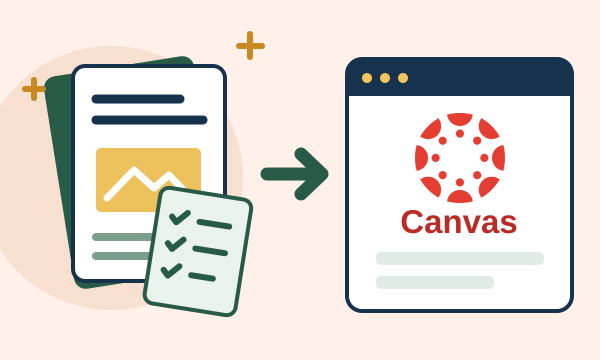
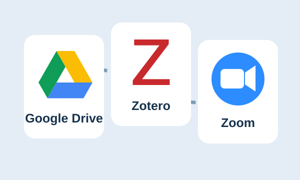
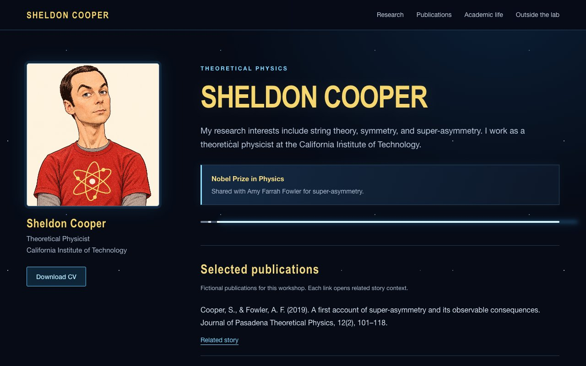

Duke Kunshan University
Faculty Workshop:
Agentic Workflow
with Codex
A hands-on introduction for faculty across disciplines · No coding experience required
Today's exercises use mock or non-sensitive materials. Institutional permissions for real student records or live campus systems will be gathered and clarified separately with CTL & IT.
From Talking to Doing
Chatbots vs. AI AgentsChatbot
ChatGPT · Claude · DeepSeek
The Brain
Chat · Answer · Draft
Works mainly in a chat window for brainstorming, answering questions, and drafting text. You handle the files and next steps—bringing in materials, saving or copying the results, and putting them to use.
AI Agent
Codex · ChatGPT Work · Claude Code · WorkBuddy
Brain + Hands + Tools
Read · Use Tools · Execute · Iterate
Can work across your project folder and connected tools: reading multiple files, running code, editing documents, and creating outputs. You set the goal, review key decisions, and check and refine the results.
Part 1 · Workflow Automation
Work across your files
What it is: Letting Codex read multiple files in a folder, carry out multi-step edits, and produce new files. Updating a syllabus is just one starter demo—the same workflow applies to much of our everyday multi-file work, such as course prep, research synthesis, and more.
Demo 1: Update a syllabus & generate a Canvas import file
0 / 4 steps
| Step | What to Do & Sample Prompts |
|---|---|
1. Create a folder Demo 1 on your Desktop.2. Download these two files from the website into Demo 1:File 1A:DKU_Calendar_2026-2027.pdf(real DKU academic calendar)DownloadFile 1B:Sample_Syllabus_Spring2025.docx(mock syllabus)Download3. In Codex, click Create project, name it Demo 1, and add your Desktop folder Demo 1 as the source folder. | |
Ask Codex to update the old syllabus using the new DKU calendar and save a separate Word copy with Track Changes.Sample prompt (click Copy or write in your own words) : Sample prompt | |
1. Open the new Word file and verify key details against the DKU calendar.2. Once everything looks right, choose Accept All Changes and save your updated Fall syllabus. | |
1. Ask Codex to turn the updated Fall syllabus into a Canvas-importable course file.Sample prompt (click Copy or write in your own words) : Sample prompt .imscc file, and check whether the modules, assignments, and due dates look right. |
More Workflow Examples
Reference Case 1Course Prep: From Course Materials to Teaching Resources
What it does
Use your existing course files (syllabus, readings, lecture notes) in one folder to draft ready-to-edit teaching materials—such as assignment sheets, grading rubrics, study guides, or multi-version case materials.
Try a quick demo
(draft an assignment sheet & rubric from a syllabus)
Put your own syllabus in a Codex project folder — or download our mock syllabus directly: File 1B:
Sample_Syllabus_Spring2025.docxDownloadSend the sample prompt below to generate a 1-page Word assignment sheet and grading rubric:
Sample promptRead the syllabus in this folder. Draft a 1-page student assignment sheet and a clear grading rubric in Word for the "Evidence Audit" assignment.Open the Word file and check whether the instructions and grading criteria fit your course.
More examples to explore
- DKU CTL · Changcheng Zheng (Physics) — Took existing PHYS 121/201 homework problems and used ChatGPT to rewrite them with built-in hints and step-by-step scaffolding so students try solving problems first (shows before/after versions).
- Northeastern · Personalized Case Study Simulations — Adapted the same project assignment into different industry scenarios (construction, fashion, etc.) with matching weekly updates.
- University of Vermont · Lecture Builder Skill — An advanced example of turning a multi-step prep workflow (papers → notes, slides, discussion questions, exam items) into a reusable Agent Skill.

Reference Case 2Connect to Other Platforms (Google Drive, Zotero, Zoom)
What it does
Use Codex plugins/connectors to work directly with external platforms—such as Google Drive, Zotero, or Zoom—so Codex can read existing cloud files, synthesize information, and write new documents back to a shared workspace.
Try a quick demo
(summarize 3 shared meeting notes in Google Drive and write back an action tracker)
Connect Google Drive in Codex (under Plugins).
Send the sample prompt below so Codex reads the 3 notes in this shared Google Drive folder (DKU Faculty AI Workshop - Google Drive Case) and creates a new summary Doc inside the
Outputssubfolder:Sample promptRead the 3 meeting notes in this shared Google Drive folder (https://drive.google.com/drive/folders/1HuGfgmu8g5vWAd4nDNXel3etAXERxkOk). Summarize the key decisions, open questions, and action items by owner, then save a new Google Doc named "Action_Tracker_[YourName]" inside its "Outputs" subfolder. Do not modify any existing files.Open your new Doc in
Outputsand check the file you produced.
More examples to explore
- Zoom plugin — Summarize non-sensitive meeting transcripts into key decisions and follow-up actions.
- Zotero plugin — Query, organize, or summarize items from your reference library.
Part 2 · Vibe Coding / AI coding
Build, preview, refine
What it is: Describing what you want in everyday language—English, Chinese, or a mix of both—so Codex builds a working webpage or small digital tool that you can preview, check, refine, and even publish. A personal website is just an accessible first demo—the exact same loop works for HTML slides, concept simulations, data dashboards, and even custom tools and apps to solve everyday teaching and research problems.
Demo 2: Turn a CV into a personal website
0 / 4 steps
| Step | What to Do & Sample Prompts |
|---|---|
1. Create a folder Demo 2 on your Desktop.2. Download these two sample files from the website into Demo 2:File 2A:Sheldon_Sample_CV.docxDownloadFile 2B:Sheldon_Portrait.pngDownload(Tip: Feel free to swap these for your own public CV or DKU bio and photo)3. In Codex, click Create project, name it Demo 2, and add your Desktop folder Demo 2 as the source folder. | |
1. Ask Codex to build a personal website using the CV and photo in your folder.Sample prompt (click Copy and adjust the name if using your own CV) : Sample prompt | |
1. Make at least 1 edit using either method: • Annotation: Highlight an item in the preview and ask Codex to edit or remove it. • Chat: Request a change (e.g., “Add an Office Hours section”, or “Give the website a Star Wars-inspired look”) .2. Refresh your browser to check the update. | |
1. Sign up for a free account at github.com (if you don’t have one yet).2. Ask Codex to publish the webpage to GitHub Pages. It will walk you through a quick one-time GitHub verification—just follow its prompts.Sample prompt : Sample prompt |

More publishing options (including ChatGPT Sites for ChatGPT subscription accounts) are in the FAQ below.
More Vibe Coding Examples
Reference Case 3Course Pages & HTML Slides
What it does
Turn static course materials—such as a syllabus, lesson plans, reading guides, handouts, or resource lists—into a clean webpage or HTML slide deck that students can browse and use without extra logins—just like this workshop website.
Try a quick demo
(turn a syllabus + lesson plan into an interactive HTML slide deck for class)
Put your own syllabus and a 1-page lesson plan into a Codex folder — or download our mock intro research-methods files: File 1B:
Sample_Syllabus_Spring2025.docxDownloadFile 3A:Sample_Lesson_Plan_Week2.docxDownloadSend the sample prompt below to build an HTML slide deck based on the syllabus and the lesson plan:
Sample promptRead the syllabus and Week 2 lesson plan in this folder, and create a clean, single-file HTML slide deck for this 75-minute class.Tip: Like the look of an existing webpage or slide deck? Drop a screenshot of it into the folder and ask Codex to match that visual style.
Investigate and refine the HTML slides.
More examples to explore
- Khalifa University · HTML Lecture Slides & Full Course Website — Browser-based Quarto RevealJS slides and a complete 15-week course hub built with Codex.
- University of Sydney · Step-by-Step Interactive Lab — Combines visual explainers, short videos, Colab notebooks, and ethics discussion into one guided student lab page.
- CSU Chico · Spanish 101 Practice Page — Chains reading comprehension, self-check hints, and speaking prep prompts on one webpage.
- Harvard GSE · Research Project Hub — Clean public website sharing a research team's strategies, case studies, and downloadable guides in one place.
- This Workshop Website itself — Built step by step with AI agents: first researching university cases and AI data classification & policies, then iterating on the workshop plan and a written blueprint back and forth before generating the handout and this page.
Reference Case 4Data Dashboards & Visualizations
What it does
Turn a public dataset (CSV/Excel) into an interactive browser dashboard where students, collaborators, or readers can filter charts, inspect patterns, and explore findings on their own.
Try a quick demo
(turn a real public AI dataset into an interactive HTML dashboard)
Put your own small non-sensitive CSV file into a Codex project folder — or download this real public dataset (annual AI scholarly publications by country, 2016–2024) into your folder: File 4A:
OWID_AI_Scholarly_Publications_by_Country.csvDownloadSend the sample prompt below to build a single-file HTML dashboard:
Sample promptRead the CSV file in this folder and build an HTML interactive data dashboard.Tip: Have a specific layout or comparison in mind? Drop in a screenshot of a dashboard style you like, or tell Codex which charts, filters, or comparisons you want to highlight.
Open the HTML file in your browser to investigate and refine the dashboard (optional: compare your version with Our World in Data's visualization of this same sample dataset for ideas on what to improve next).
More examples to explore
- Duke University · Interactive Library Data Dashboard — Public library borrowing dataset turned into a filterable dashboard with downloadable source data (see Duke's prompts).
- Oxford · Geographic Bias Dashboard — Interactive companion site letting readers explore a published paper's findings across countries and cities.
Reference Case 5Interactive Simulations & Learning GamesInspiration Showcase
What it does
Turn abstract disciplinary concepts, scientific models, or historical case studies into interactive browser simulations and playful learning games where students adjust parameters, make decisions, and observe consequences—going beyond what static readings or slides can convey.
Examples to explore
- University of Vermont · Supply & Demand Explorer — Helps economics students test predictions about cost shifts by adjusting supply and demand curves in real time (Economics).
- Into the Magma Chamber · Volcano Eruption Simulation — Helps students connect underground magma pressure, gas, and viscosity to volcanic behavior by predicting and triggering eruptions (Earth Science / Geology).
- Oxford · Interactive 3D Peptide Explorer — Lets biochemistry students rotate a 3D peptide and adjust backbone angles with synchronized projections to understand molecular geometry (Biochemistry).
- The Ames Room · Visual Perception Game — Helps students uncover how depth cues create optical illusions by letting them bend room geometry and test their own perception (Psychology / Visual Perception).
- Apothecary Simulator · 1680s Mexico City RPG — Builds historical empathy and primary-source reasoning by placing students in a 1680s apothecary's shoes to weigh medical, economic, and ethical trade-offs (History / Humanities).
- Gallery · Vibe Coding Learning Games & Simulations (WeTeachWithAI) — A curated gallery of playable learning games and simulations across sciences, medicine, economics, law, and humanities, complete with sample prompts for building your own.
Reference Case 6Custom Tools & AppsInspiration Showcase
What it does
Go beyond informational webpages to build small, custom browser tools or desktop apps for recurring research headaches or everyday curiosities—such as extracting data from paper charts, tracking grant alerts, or answering a quick personal question.
Examples to explore
- pdf2plot · Extract Data from PDF Charts to CSV — LSHTM Prof. Adam Kucharski's browser tool (with a built-in sample PDF) that turns vector charts inside papers back into CSV data.
- Grantbar · Automated Research Funding Alerts — UVA Assoc. Prof. Stephen D. Turner's lightweight Mac menu-bar app that monitors NIH/NSF RSS feeds for new grant opportunities.
- Overhead · Live Flight Spotter (Mac App) — A playful personal Mac app built by a college professor simply to answer "what plane just flew overhead?"—a reminder that small everyday curiosities can become custom apps too.
Working with Codex
4 Quick Tips
- Start simple and iterate: Don't try to write a perfect prompt in one go. Ask for a simple first version, look at what Codex builds, and adjust one thing at a time in everyday language—English, Chinese, or a mix of both.
- Use a screenshot as your prompt: Like the look of a dashboard, activity page, or website? Take a screenshot of it, drop it into your folder with your own data or text, and tell Codex: Sample prompt
Build an HTML page for my file using a similar layout and visual style to this screenshot. - For complex tasks, plan before you build: Today's sample prompts generate a file in one step so you can try them quickly. For larger projects—like this workshop website—don't jump straight to the final output. Let Codex read your materials first, talk through ideas back and forth, and save an outline or Markdown blueprint. Once the plan looks right, ask Codex to generate the final file and refine it.
- Stay in the driver's seat and check key decisions: When trying a new task, review Codex step by step so you see how it works. Once a routine workflow becomes familiar, you can let Codex handle more of the legwork while you keep checking the key decisions and final outputs.
Personal Project
Build a First Version
| Track | What to Try |
|---|---|
| Track 1 · Build on a Demo | Continue refining one of today's two demos—using the sample files or swapping in your own syllabus or CV. |
| Track 2 · Adapt a Reference Case | Pick a case from the Reference Cases above and adapt its sample prompt to your own course or research. |
| Track 3 · Try Your Own Idea | Start from a small task in your own teaching or research—put 1–2 non-sensitive files in a folder and experiment on your ideas! |
Gallery Walk
- Prepare your sign: Write your project or idea title in large letters on the Gallery Walk Sign section of your Handout and display it next to your laptop.
- Two rounds of Gallery Walk:
- Round 1: Half of the room stays at their laptops to share; the other half walks around to explore.
- Round 2: Switch roles!
Wrap-Up
Share what you tried
Your project or idea: Share a short note, screenshot, or link so more DKU colleagues can see what you tried.
Questions & support: Post any questions or next-step support you'd like from DKU.
Keep exploring
Frequently asked questions
Q1: Why are we using Codex today instead of ChatGPT Work or regular ChatGPT?
Regular ChatGPT is great for conversation, while agents like Codex and ChatGPT Work can read folders, edit files, and run tasks across steps. ChatGPT Work requires a paid ChatGPT subscription or institutional Edu workspace and does not take a custom third-party/university API gateway key. Codex supports connecting directly to DKU's API gateway, making it accessible to all faculty today—and it is especially transparent for multi-file document edits and webpage building. If you already use a personal ChatGPT subscription, the same agentic habits transfer smoothly to ChatGPT Work or other tools.
Q2: Can I use real student work with Codex?
Using DKU's API provides a university-supported model path, but it does not automatically authorize uploading identifiable student records or connecting live campus systems (like Canvas API or Outlook email). Today's demos intentionally use mock materials and manual file import (.imscc / local HTML preview). If you have a real teaching workflow you wish DKU would support or clarify, please post it on the Padlet above—your concrete cases will directly inform the school's next-step guidance.
Q3: Do I have to publish an HTML webpage online to use or share it?
No! A single-file .html webpage is just a normal file on your computer—like a PDF or PowerPoint—so you don't need to put it online unless you want a shareable URL:
- Option 1 · Use or share it as a regular file (no publishing needed): Double-click the
.htmlfile in any browser on your laptop to project it in class (works even offline), send it as an email attachment, or upload it to Canvas as a course page. - Option 2 · Publish it as a shareable link:
- *GitHub Pages (free & works with DKU's API):* Create a free GitHub account and let Codex publish and update the site for you (see Demo 2, Step 4 above).
- *ChatGPT Sites (requires a ChatGPT subscription account):* Send Codex: Sample prompt
Publish the website to ChatGPT Sites and give me the link.
Q4: Which file formats work best with Codex (Word / PPT vs. Markdown / HTML)?
Codex can read and generate almost any common file type—including Word (.docx), PowerPoint (.pptx), PDF, and Excel—so you can start with whatever you already have. However, AI agents work fastest and cleanest with text-based formats like Markdown (.md) and HTML, whereas complex layout formats like Word (.docx) and PowerPoint (.pptx) are harder for AI to style precisely without occasional formatting quirks. A practical tip: iterate in Markdown or HTML when you want speed and clean presentation, and convert to .docx or .pptx when you specifically need those formats.
Q5: What if I have a lot of background context to explain—do I have to type it all out?
No—try voice input (using your Mac/Windows built-in dictation or a dedicated voice-to-text tool)! Speaking is often much faster than typing, and even if your spoken explanation is a bit messy or mixes English and Chinese, Codex handles it well and immediately gets much richer context for your task. (Tools worth trying: Doubao Input, Shandianshuo, or Typeless.)